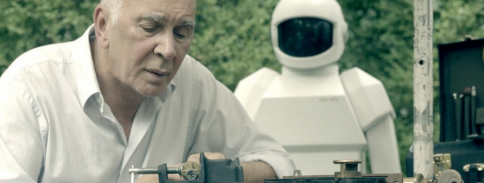
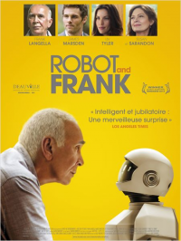

13 ROBOT AND FRANK
- Critique
- Comédie dramatique


Dans un futur proche, les robots ont pris une grande importance. Frank, ancien cambrioleur de haut vol, voit sa mémoire peu à peu s’en aller et vit reclus chez lui. Son fils décide de lui offrir un robot qui sera là pour s’occuper de lui. Ce dernier va changer la vision qu’il a du monde.
Un film assez étrange qui, à partir d’une idée de départ plutôt intéressante, n’arrive pas vraiment à décoller. La faute à un scénario qui part trop dans tous les sens et qui, finalement, n’exploite pas assez bien le sujet même du film.
Un film assez étrange qui, à partir d’une idée de départ plutôt intéressante, n’arrive pas vraiment à décoller. La faute à un scénario qui part trop dans tous les sens et qui, finalement, n’exploite pas assez bien le sujet même du film.
- Timothée
- 02.10.2012, 18:44


 Patrick Orbéra, ancien grand joueur de l’équipe de France de football, en est arrivé à un point où il doit aller entraîner l’équipe de Molène, qui doit absolument se qualifier en Coupe de France pour sauver la conserverie. Orbéra va alors faire appel à des anciens coéquipiers…
Patrick Orbéra, ancien grand joueur de l’équipe de France de football, en est arrivé à un point où il doit aller entraîner l’équipe de Molène, qui doit absolument se qualifier en Coupe de France pour sauver la conserverie. Orbéra va alors faire appel à des anciens coéquipiers…